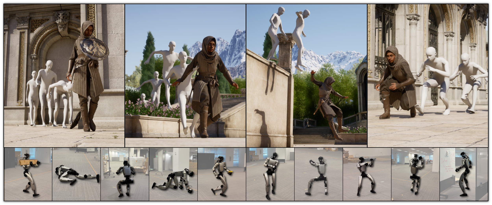

Humanoid Motion at NVIDIA



MotionBricks achieves 15000 FPS and 2 ms latency covering over 350,000 motion skills by a single neural backbone.
We introduce MotionBricks: a large-scale, real-time generative framework with a two-fold solution. First, we propose a large-scale modular latent generative backbone tailored for robust real-time motion generation, effectively modeling a dataset of over 350,000 motion clips with a single model. Second, we introduce smart primitives that provide a unified, robust, and intuitive interface for authoring both navigation and object interaction. Notably, MotionBricks applies to new downstream tasks in a zero-shot manner — no fine-tuning or task-specific tagging required — so applications can be assembled in a plug-and-play manner like stacking bricks, without expert animation knowledge.
Here we showcase a 2:40 minutes uncut UE5 demo spanning the full spectrum of navigation and object-scene interaction required for industry level game designs. Every motion is generated by neural networks — no foot-locking, no blending, no collision detection, no hand-authored transitions.
To our knowledge, MotionBricks is the first neural model to reach this level of motion quality, controllability, complexity, and completeness.
Smart locomotion offers a unified, plug-and-play interface for navigation — seamlessly and robustly composing natural motions from arbitrary velocity, heading, and style commands, with no retraining or per-task tuning.
Distinct stylized locomotion — injured, zombie, skipping, strafing — generated zero-shot from a single smart-primitive prompt.
Continuous runtime transitions across speed, direction, and gait — dialed live from user commands.
Smart objects specify scene and object interaction as a flexible set of proxy keyframes; the backbone fills in the approach, contact, and follow-through — with natural variation across runs.
Authoring smart-object behaviors end-to-end inside Unreal Engine 5 — plug-and-play like stacking bricks, with no animation graph wiring and no expert animation knowledge required.
Side-by-side against six state-of-the-art in-betweening baselines.
MotionBricks is now a core organic component of NVIDIA's GR00T Whole-Body Control effort, powering the motion-generation layer of the stack. The full release is now public: the model is fully embedded in GR00T Whole-Body Control's robotics formulation.
The earlier preview release also remains available at GR00T-WholeBodyControl/motionbricks. It ships an interactive G1 demo and a self-contained synthetic training pipeline, with additional instructions for incorporating the BONES-SEED dataset, so the community can reproduce our core training loop and start training their own MotionBricks-style policies.
Finally, the official MotionBricks code is available at NVlabs/motionbricks. The release includes the MotionBricks runtime (Warp, Newton and TensorRT backends) with pretrained SOMA and Unitree G1 models (ONNX bundled, SafeTensors checkpoints on Hugging Face) and a standalone ONNX exporter. It also ships interactive demos (an Inbetweener and a Scene Preview with SOMA and G1 gym scenes), and a Smart Primitive Editor and Scene Editor as one way to author reusable interactions without retraining, along with sample motions and documentation with runnable examples. We distilled the core ideas of our Unreal Engine showcase into plain Python, with a focus on code that is easy to follow.
We thank Cyrus Hogg, John Malaska, Will Telford, Jon Shepard, Simon Ouellet, Dmitry Korobchenko, Anna Minx, Edy Lim, Eugene Jeong, Sam Wu, Ehsan Hassani, Charles Zhou, Freya Li, Ling Li, Qiao Wang, and Lina Song for their support and guidance throughout the project.
We thank Alberto Guerra, Boon Cotter, Byeong Gyu Park, Craig Christian, Gabriele Leone, Yenal Kal, Pierre Fleau, Miguel Guerrero, and Marc-Andre Carbonneau from the art team for their help in creating the Unreal Engine 5 demo and its assets.
We also thank Hung Yu Ling, Yue Zhao, Danila Krivenkov, Evgenii Tumanov, Morteza Ramezanali, Winston Chen, Yu-Shiang Wong, Jiefeng Li, Yeongho Seol, Jun Saito, Michael Buttner, Haotian Zhang, Yifeng Jiang, Chen Tessler, Sanja Fidler, Umar Iqbal, Jan Kautz, Yan Chang, and Jim Fan for their helpful discussions and feedback.
@misc{wang2026motionbricksscalablerealtimemotions,
title={MotionBricks: Scalable Real-Time Motions with Modular Latent Generative Model and Smart Primitives},
author={Tingwu Wang and Olivier Dionne and Michael De Ruyter and David Minor and Davis Rempe and Kaifeng Zhao and Mathis Petrovich and Ye Yuan and Chenran Li and Zhengyi Luo and Brian Robison and Xavier Blackwell and Bernardo Antoniazzi and Xue Bin Peng and Yuke Zhu and Simon Yuen},
year={2026},
eprint={2604.24833},
archivePrefix={arXiv},
primaryClass={cs.RO},
url={https://arxiv.org/abs/2604.24833},
}